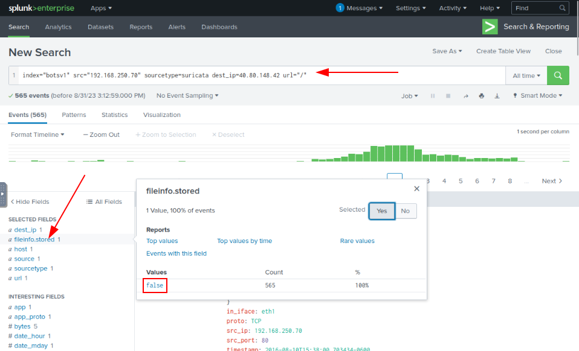
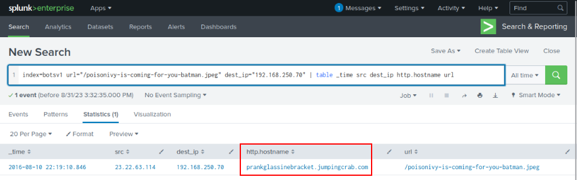

As an analyst, our first quest could be to figure out the traffic flow that could lead us to the answer to this question. At first I was not being able to decode the method used by the attacker, but once i stopped assuming that the firewall would block any connections made from the server to any IP Address, then it all became clear
Search Query:
index=botsv1 src=192.168.250.70 sourcetype=suricata
Lets check the destination IPs one by one to see what kind of traffic/communication is being carried out.
Search Query:
index=botsv1 src=192.168.250.70 sourcetype=suricata dest_ip=40.80.148.42

So we will move to the other IP Addres.
Search Query:
index=botsv1 src=192.168.250.70 sourcetype=suricata dest_ip=23.22.63.114
Search Query:
index=botsv1 url="/poisonivy-is-coming-for-you-batman.jpeg"
dest_ip="192.168.250.70" | table _time src dest_ip http.hostname url

After compromising the web server, the attacker defaced the website.
Findings:
-Outbound traffic initiated by the web server (unusual).-Second IP (23.22.63.114):
• Suspicious files downloaded: 2 PHP files, 1 jpeg file.
• Suspicious jpeg downloaded from prankglassinebracket.jumpingcrab.com.
-Conclusion:
• Website defacement due to downloaded suspicious file “/poisonivy-is-coming-for-you-batman.jpeg”.